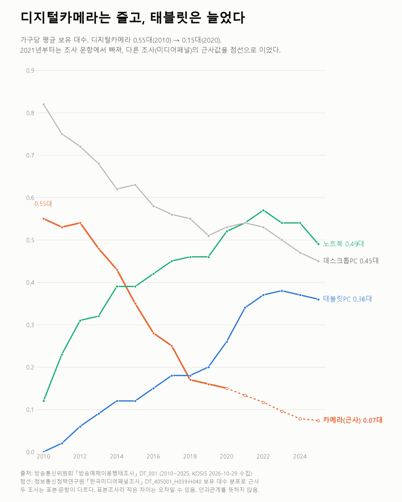
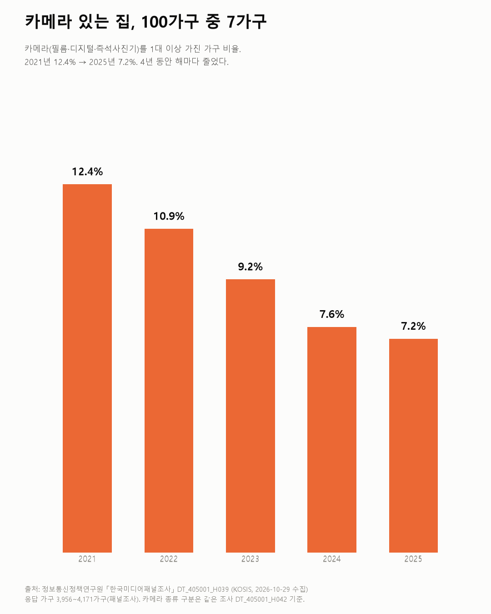

방송매체이용행태조사 + 한국미디어패널
디지털카메라는 줄고, 태블릿은 늘었다
가구 기기 보유 2010~2025

질문
디지털 카메라를 가진 가구는 얼마나 줄었나? 다른 기기와 비교하면 어떤가?
사용 데이터와 출처
| 데이터 | 출처 | 쓰임 |
|---|---|---|
| 가구매체 보유현황 (KOSIS DT_001) | 방송통신위원회 「방송매체이용행태조사」 | 가구당 평균 보유 대수, 2010~2025 (카메라는 2020년까지) |
| 촬영기기 보유 여부 (KOSIS DT_405001_H039) | 정보통신정책연구원 「한국미디어패널조사」 | 카메라 보유 가구 비율, 2021~2025 |
| 촬영기기 보유대수 (KOSIS DT_405001_H040) | 같음 | 보유 대수 분포 → 가구당 대수 근사 |
- 수집일: 2026-10-29 (KOSIS 오픈API). 둘 다 표본조사다.
- 근사 계산: 가구당 대수 ≈ Σ(대수 × 해당 비율). '3대 이상'처럼 열린 구간은 하한값을 써서 실제보다 약간 낮게 잡힌다.
- 검증: 미디어패널 '있다 + 없다 = 100%'를 확인했다.
- 연결 확인: 방통위 2020년 0.15대, 미디어패널 근사 2021년 0.13대로 두 조사가 크게 어긋나지 않는다.
인사이트
1. 가구당 디지털카메라는 10년 새 0.55대에서 0.15대로 줄었다(2010→2020, 약 73% 감소). 2010년에는 대략 두 집에 한 대꼴이었다.
2. 노트북은 2015년, 태블릿은 2018년에 카메라를 앞질렀다. 가구당 노트북은 0.12대(2010)에서 0.49대(2025)로, 태블릿은 0대(2010)에서 0.36대(2025)로 늘었다. 데스크톱은 0.82대에서 0.45대로 줄었다.
3. 카메라를 가진 집은 2025년 100가구 중 7가구다. 미디어패널 기준 카메라(필름·디지털·즉석사진기)를 1대 이상 가진 가구 비율은 2021년 12.4%에서 2025년 7.2%로 해마다 줄었다.

한계
이 데이터로 말할 수 없는 것
- 두 조사를 이었다. 방통위의 디지털 카메라 문항이 2020년에 없어져, 2021년부터는 다른 조사(미디어패널)의 근사값을 점선으로 이었다. 표본, 문항, 카메라의 범위(미디어패널은 필름·즉석사진기 포함)가 다르다.
- 스마트폰은 없다. 스마트폰 카메라는 이 비교에 들어 있지 않다. "스마트폰 때문에 카메라가 줄었다"는 이 데이터로 말할 수 없다. 같은 시기에 함께 움직였다는 패턴만 있다.
- 가구 단위다. 개인이 카메라를 갖고 있는지, 실제로 쓰는지는 알 수 없다.
- 표본조사다. 2024년 7.6%와 2025년 7.2%처럼 작은 차이는 표본 오차일 수 있다.
- 판매량이 아니다. 카메라 시장(고급 미러리스 등)이 줄었는지는 별개의 질문이다.
전제 기록
데이터를 보기 전에 적어둔 것, 그리고 보고 나서 바꾼 것
- 전제 기록(premises)(데이터를 받기 전에 작성)에서 바꾼 것:
- 방통위 값은 보유율이 아니라 가구당 대수였다.
- 카메라 문항이 2020년에 끝나, 두 조사를 근사값으로 이었다.
- 이유는 premises.md의 변경 기록에 있다.